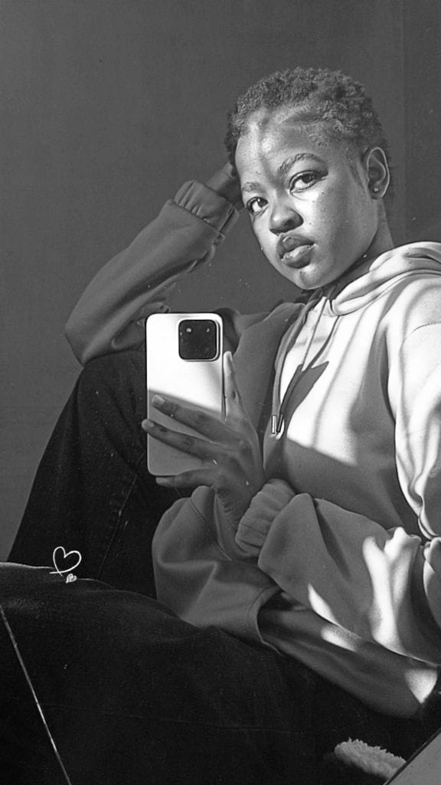

Brands
In partnership with.
Quinn models for and creates content as brand ambassador for the following brands.

Let's create something with intention.
For bookings, collaborations, and brand partnerships, reach out. I'd love to hear the vision.
Work With Me